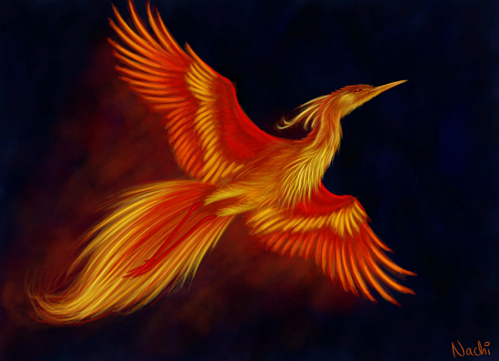

Разделение мифологических персонажей с шаманскими атрибутами.
Волшебная птица Самрук (Симург), птица-созидательница, птица нового творения мира, птица Мирового древа - это древнейший космогонический образ птицы-демиурга, носителя царственности, пророчества, счастья, мудрости, высшего божественного знания, справедливости и защиты; символ древнеиндийского философского принципа Атман; символ который вдохновляет и насыщает своей древней архетипической энергией человека на протяжении многих исторических эпох и по настоящее время. У казахского народа птица зовется - Самрук, (каз. Самұрық), также Самырык, Серикус, Самыр, Самырау, Алып Каракус, Шаныраукус. В казахских сказаниях птица Самрук живет на вершине древа Байтерек - Мирового древа жизни. Согласно мифу, в гнезде на самой вершине кроны дерева, Самрук приносит одно золотое яйцо, символизирующее жизнь и дарующее жизнь. В корнях древа Байтерек прячется дракон Айдахар, каждый раз выползающий с намерениями съесть яйцо или вылупившегося птенца. Если дракону это удавалось, то жизнь замирала. На помощь Самрук и ее птенцам приходит Герой-батыр. В легендарном казахском эпосе «Ер-Тостик», воспет главный герой убивающий стрелой в самое сердце дракона и спасающий птенцов Самрук, что помогает герою продолжить свой путь и выполнить миссию с помощью волшебной птицы. Шевелева Е.В.
